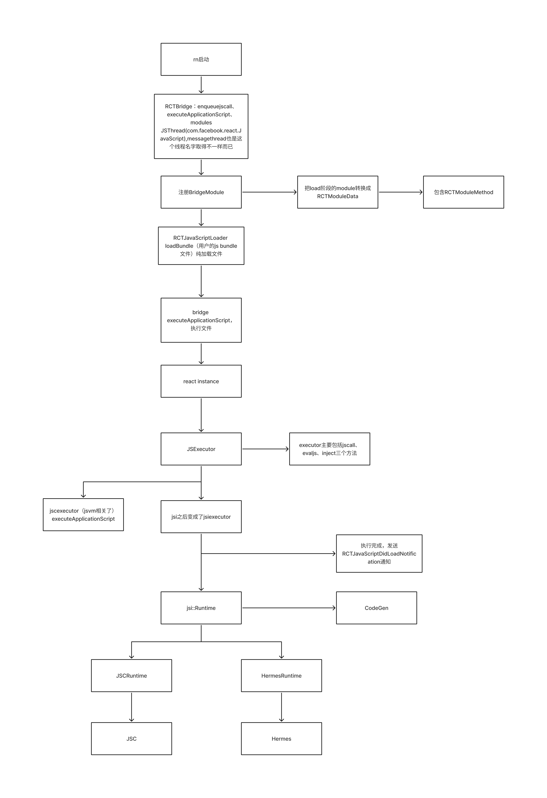
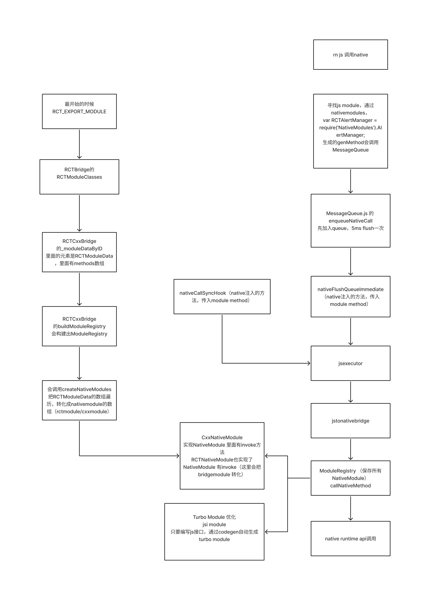
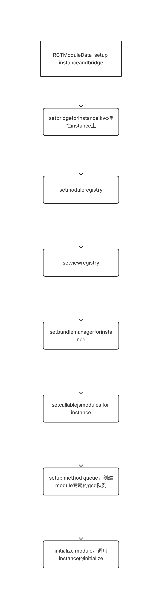
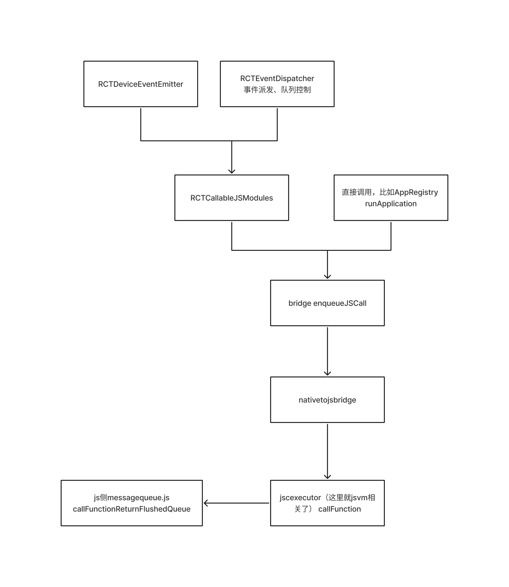

Bridge的流程
在ReactNative中可以粗略分为API、Render、Bridger、JSI四个部分，而Bridge对上提供给API、Render，对下调用JSI，起到一个承上启下的桥梁作用。
Bridge负责四个部分的事情，分别是API、Bundle、Native->JS、JS->Native，下面分别来看看。
启动
首先看一下启动的整体流程

js调用native

RCTModuleData
API的具象表现就在Module这一侧

native调用js

RCTEventEmitter
特殊的RCTBridgeModule提供addListener的方法给前端，实现是添加通知的观察者
RCTEventEmitter有很多子类，比如RCTAppState，RCTNetworking，RCTWebSocketModule
RCTEventEmitter 提供sendEventWithName方法，调用 RCTCallableJSModules invokeModule -> bridge enqueueJSCall ，调用JS的RCTDeviceEventEmitter的emit方法
NativeEventEmitter.js
addListener方法，调用native的RCTDeviceEventEmitter.addListener
RCTAppState
在startObserving会监听app的生命周期，然后发送appStateDidChange事件
RCTEventDispatcher
一个特殊的RCTBridgeModule
调用js的RCTViewEventEmitter、RCTNativeAppEventEmitter、RCTDeviceEventEmitter
- sendEvent，加入eventQueue
- flushEventsQueue，清空eventQueue，调用dispatchEvent
- dispatchEvent，调用js方法
RCTModuleData
_moduleDataByID 管理着RCTModuleData
_initializeModules的实现，在start的时候调用，主要是调用所有moduledata的instance方法
instance方法
setUpInstanceAndBridge
if (shouldSetup) {
// Bridge must be set before methodQueue is set up, as methodQueue
// initialization requires it (View Managers get their queue by calling
// self.bridge.uiManager.methodQueue)
[self setBridgeForInstance];
[self setModuleRegistryForInstance];
[self setViewRegistryForInstance];
[self setBundleManagerForInstance];
[self setCallableJSModulesForInstance];
}
[self setUpMethodQueue];
if (shouldSetup) {
[self _initializeModule];
}
JS侧Bridge
setup
Libraries/Core/setUpBatchedBridge.js
- registerModule调用，注入提供给native调用的JSTimers、RCTDeviceEventEmitter、RCTNativeAppEventEmitter
registerModule的实现在MessageQueue，
MessageQueue和NativeModules
提供给native的调用函数
callFunctionReturnFlushedQueue 对应JSIExecutor::callFunction
invokeCallbackAndReturnFlushedQueue 对应 JSIExecutor::invokeCallback
其中callFunctionReturnFlushedQueue
callFunctionReturnFlushedQueue->__callFunction
调用在js侧定义的函数，比如 RCTEventEmitter.receiveTouches(ReactNativeRenderer.js),JSTimers.callTimers(JSTimers.js)
invokeCallbackAndReturnFlushedQueue invokeCallbackAndReturnFlushedQueue -> __invokeCallback->然后调用js callback
- registerModule，把module保存在_lazyCallableModules
提供js的调用函数
callNativeSyncHook
enqueueNativeCall
方法队列
Native上调用JS的队列 enqueueJSCall，Bridge的 _runAfterLoad控制的队列，通过一个数组管理需要处理call block，一次只能进入一个（pendingCalls，元素block）
JS调用Native队列 enqueueNativeCall
- 通过 _queue数组，数组里面三个元素，分别为MODULE_IDS（0）、METHOD_IDS（1）、PARAMS（2）的数组
- flush规则是5ms一次
- js侧首先会processCallbacks，这里会全局维护一个_callID++，通过_successCallbacks/_failureCallbacks map把 此次js call的回调保存起来
- 对于js 即将传入native的参数，会在callID的基础上左移一位作为PARAMS传入native，这个就是native处理的回调id
- 调用native的时候会把_queue传入，会解析为methodCalls（MethodCall）
- native在执行完成后会调用invokeCallbackAndReturnFlushedQueue，这里native会传入cbID，js侧进行之前移位的解析操作，从_successCallbacks/_failureCallbacks获取到js callback